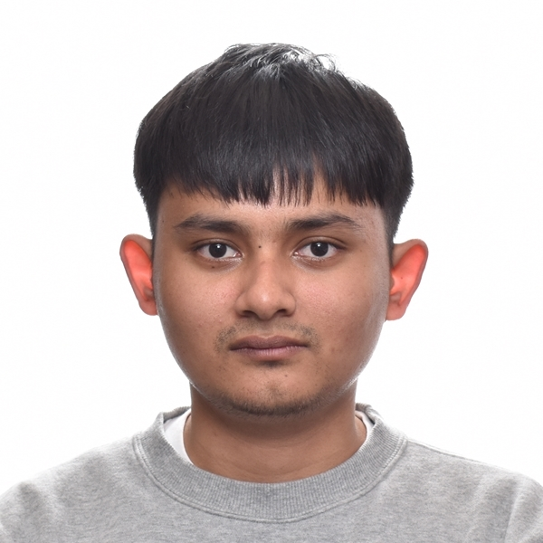

Sukprasarn Rattanapani

Summary
Hi Everyone, you can call me Po. I'm a hardworking, diligent, disciplined person.
Education
- 2016-2020 : Bachelor of Engineering Program in Telecommunication Engineering, KING MONGKUT'S INSTITUTE OF TECHNOLOGY LADKRABANG
- 2023-2025 : Master of science in computer science, Depaul University
Work Experience
Programming Skills
Python: ⭐ ⭐ ⭐ ⭐
HTML, Css, JS, SQL, JAVA: ⭐ ⭐ ⭐
C: ⭐ ⭐
Award and Certification
- Confluent Certified Administrator for Apache Kafka
- HCIA Routing and Switching Certification
- The Winner of National Final Round in Huawei ICT Competition Thailand 2019-2020